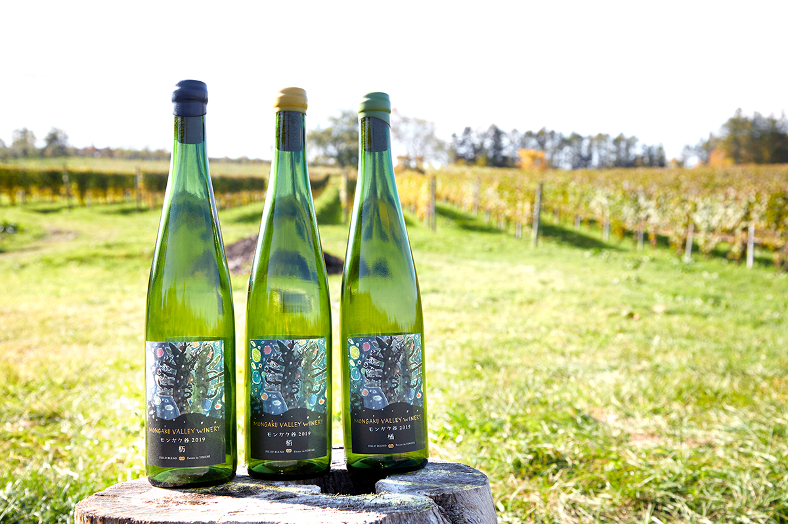
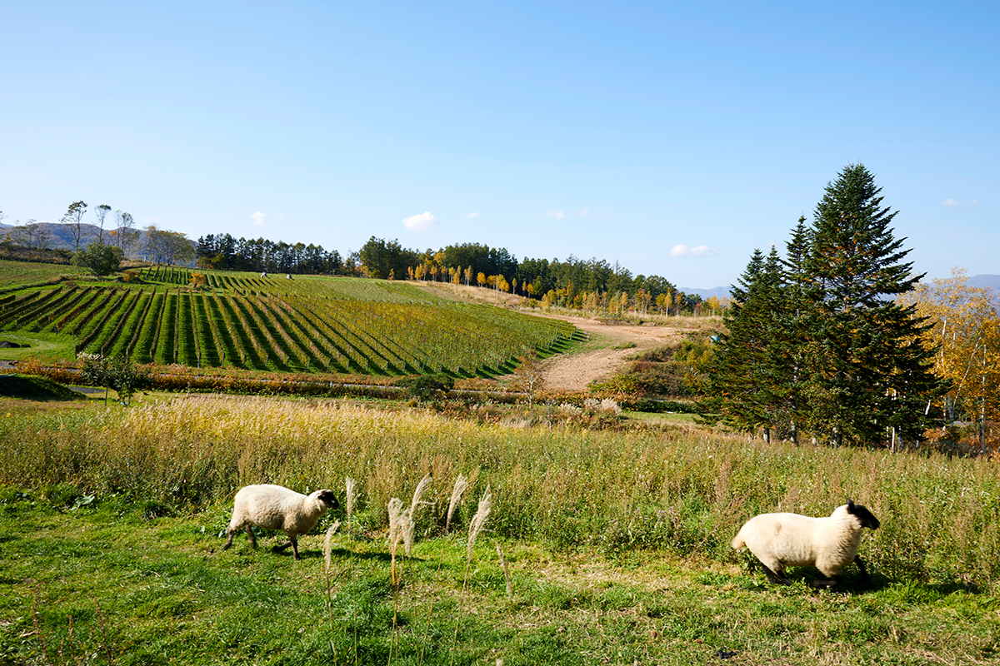
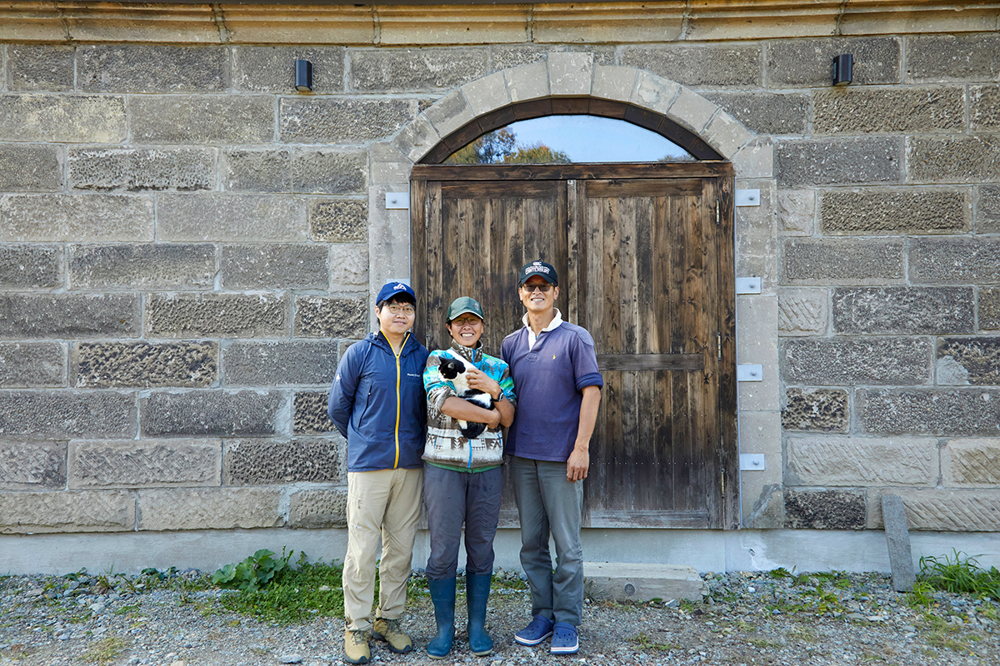
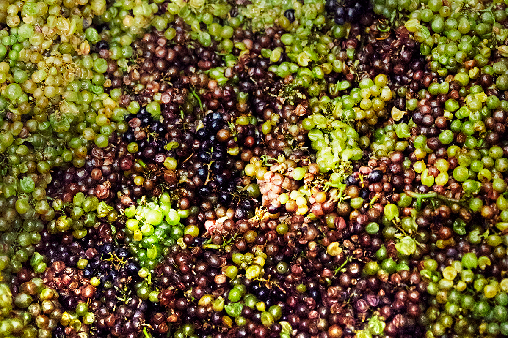
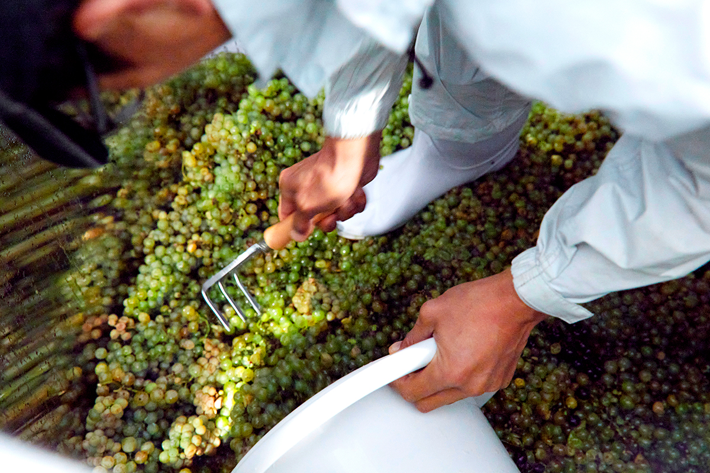
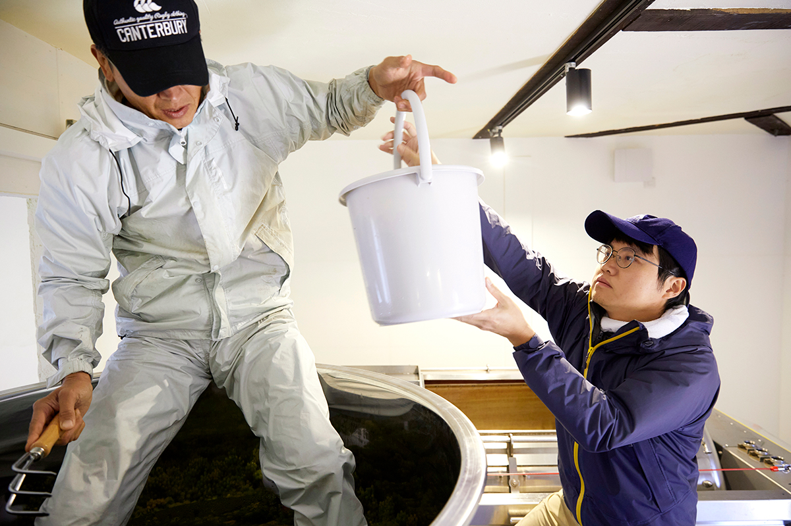
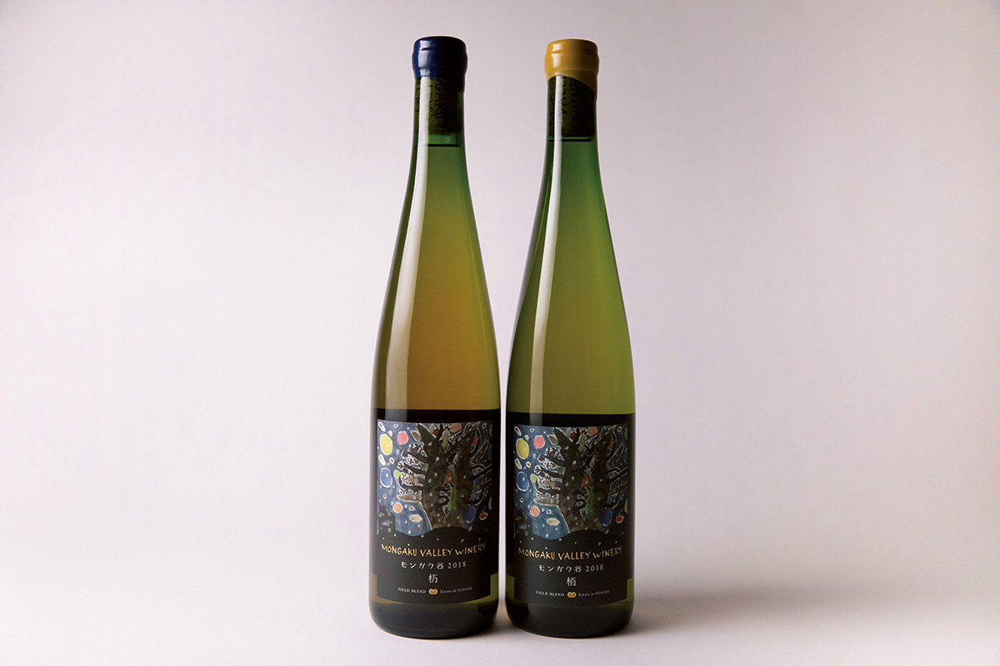

Префектура Хоккайдо · Ёити · вино
Mongaku Valley Winery: семь сортов винограда в одном чане на холмах Ёити

За холмом на правом берегу реки Нобору прячется долина Монгаку. Здесь семья Кихара делает вино из нескольких сортов винограда сразу, чтобы в бутылке был не сорт, а сам этот склон.
Долина
«Вот оно, это место»
Сигэаки Кихара пришёл в долину Монгаку в 2011 году. Поднялся на холм, где заброшенные поля давно снова заросли травой, и увидел перед собой залив Ёити, а с моря тянуло мягким ветром. «Вот оно», почувствовал он. Кихара мечтал о хозяйстве замкнутого цикла, где человек и природа могут жить рядом долго, без ущерба друг для друга, и решил строить его именно здесь.
Восточный склон заброшенного поля пришлось расчищать заново. С 2012 года за три года семья посадила 1500 саженцев винограда. Между раскорчёвкой и полевыми работами Кихара учился виноградарству и виноделию у винодела из 10R Winery: эта винодельня в Ивамидзаве делает вино по заказу небольших хозяйств, у которых ещё нет своего погреба. Винодельню семья открыла в 2018 году, на шестой год жизни в Ёити.

Погреб
Каменный склад, который переехал
Винный погреб выглядит солидно, и у него своя история. Это каменный склад из саппорского мягкого камня, где когда-то торговала лавка кимоно в другом городке Хоккайдо. Его разобрали, перевезли и собрали заново. Камень сам по себе хорошо держит тепло, но часть здания ещё и опустили наполовину под землю, а между стеной и внутренней обшивкой проложили утеплитель из измельчённых газет.
Чаны стоят в полуподвале, пресс наверху, и сок с вином перетекает вниз сам, под собственным весом. Такая схема экономит энергию и в погребе.

Виноградник
Морские ежи вместо удобрений
На виноградник разбрасывают скорлупу морских ежей, пойманных в заливе Ёити: она восполняет минералы в почве. Здесь растут два красных и пять белых сортов. Против болезней применяют бордосскую жидкость и в целом только препараты, разрешённые в органическом земледелии. Землю не пашут, между рядами оставляют траву и вмешиваются как можно меньше, чтобы не нагружать природу.
Сбор урожая иногда растягивается на несколько недель. Но разные сорта с одного виноградника до начала брожения закладывают в один чан. Такой способ называют полевым купажом, и он даёт вину объёмный аромат и сложный вкус. В Японии так работают немногие, а Mongaku Valley Winery делает ставку именно на него.

Когда виноград отбродил на мезге в стальных чанах, его вручную выгребают и переносят в пресс. Все сорта, кроме гевюрцтраминера, бродят целыми гроздьями, так что работа тяжёлая.


Вина
Названия из леса
У каждого вина своя основа из главного сорта, а три белых названы по деревьям, которые сами растут в долине Монгаку. Всех их объединяют свежая приятная кислотность и равновесие вкуса, но характеры разные.
Главное вино хозяйства «Тоти» делают в основном из пино нуар, но в нём есть все семь сортов с виноградника. «Тоти» это японский конский каштан, у которого есть и другое имя, «семилистное дерево»: о нём рассказывает японская детская сказка «Дерево Моти-моти», по мотивам которой нарисована этикетка. Во вкусе сходятся свежие цитрусовые ноты и компот из персиков и груш, а в конце появляется мягкость, как у орехов.
«Нара» сделано в основном из пинотажа, сорта родом из Южной Африки, скрещённого из сенсо и пино нуар. В нём чувствуются тропические фрукты и мёд. Вино из пинотажа в Японии делают всего несколько хозяйств. «Хаку» в основном из шардоне: собранное, строгое, с тонким цитрусовым вкусом. Розовое вино из пинотажа назвали «Хиноки», в честь японского кипариса, одного из главных деревьев страны.

Вина урожая 2018 года, «Тоти» и «Хаку», в 2021 году стоили 4620 и 3960 иен за бутылку 750 мл. В год винодельня выпускает около 12 000 бутылок.
Будущее
Долина, похожая на муми-дол
Западный склон, где стоит погреб, отдан под пастбище для овец. В 2023 году Кихара собирался осуществить давнюю мечту и начать выпас свиней: кормить их желудями местных деревьев и виноградными выжимками. Кто-то сравнивает это тихое зелёное место с долиной муми-троллей, и шаг за шагом здесь складывается то самое хозяйство замкнутого цикла, ради которого семья сюда приехала.
Регулярных экскурсий и дегустаций на винодельне нет (2026 год), на сайте сказано, что возможность побывать на винодельне только готовится. Вино продаётся через интернет-магазин винодельни и в винных магазинах. О винодельнях района Нобору читайте в статье Вина Ёити: долина Нобору, о соседях в статье Camel Farm Winery, а где попробовать вина Ёити, рассказываем в статье Рестораны с винами Ёити.
Mongaku Valley Winery
- Адрес
- префектура Хоккайдо, уезд Ёити, Ёити, Нобору-тё, 1982-1
- Телефон
- +81 135-22-1533